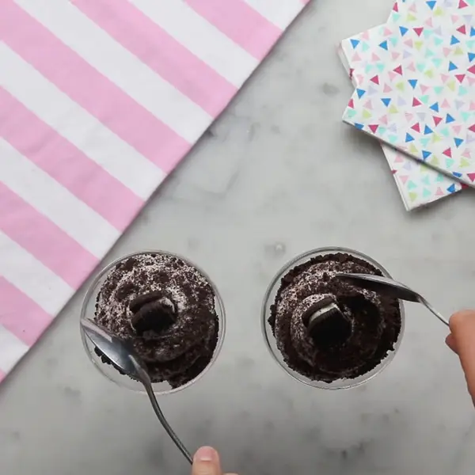

Cookies and Cream Mousse

This is the three ingredient recipe for a cookies and cream mousse. I love mousse.
Ingredients
- 8 chocolate sandwich cookies, plus more for topping
- 1 ½ cups heavy cream
- ½ cup powdered sugar
Steps
- Separate the cream from the chocolate sandwich cookies. Place the cookies in a plastic bag and the cream in a small bowl.
- Using a rolling pin, crush the cookies until they are finely ground.
- Microwave the cream from the chocolate sandwich cookies for 2 minutes.
- In a chilled medium bowl, beat the heavy cream using a hand mixer until thick and frothy.
- Add the cream from the cookies and the powdered sugar. Beat until stiff peaks form.
- Fold in the chocolate sandwich cookie crumbs, saving some as topping for later.
- Spoon into a piping bag or plastic bag with a piping tip. Pipe into serving bowls or glasses.
- Top with remaining chocolate sandwich cookie crumbs and half of a chocolate sandwich cookie, if desired.
- Serve immediately or refrigerate until ready to serve.
- Enjoy!
OG Recipe